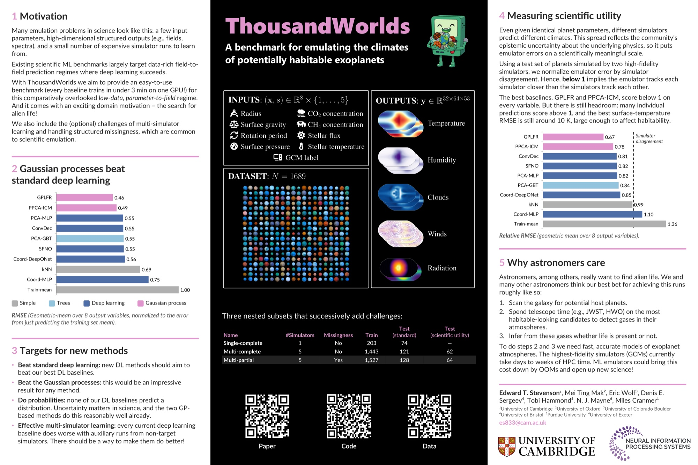
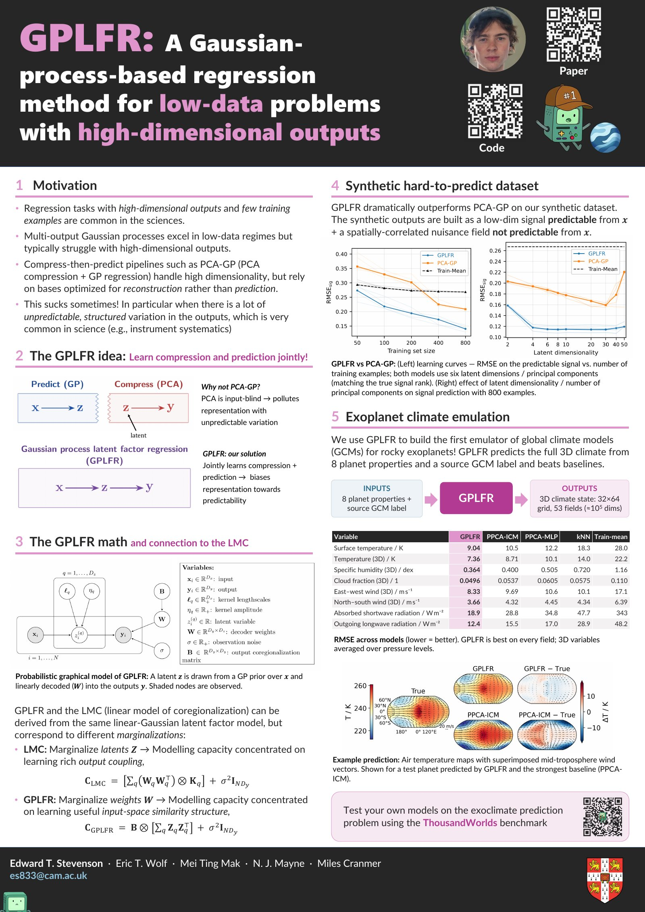

Searching for planet-driven dust spirals in ALMA visibilities
Edward T. Stevenson, Álvaro Ribas, Jessica Speedie, Richard A. Booth and Cathie J. Clarke, 2024, MNRAS 530, 4802-4825

es833@cam.ac.uk · CV · Google Scholar · ADS · GitHub · LinkedIn
Hello 👋 I'm a physics PhD student at the Institute of Astronomy in Cambridge, supervised by Miles Cranmer. I work on machine learning for science. At the moment that means the search for life, exoclimatology and foundation models for physics.
No matter how smart Claude gets, it won't be able to run a big fat fluid physics simulation in its head!
Outside research, I like films, sports (🥊,⚽) and I am often distracted by things like philosophy of mind, AI safety (😬), geopol, and Buddhism!

